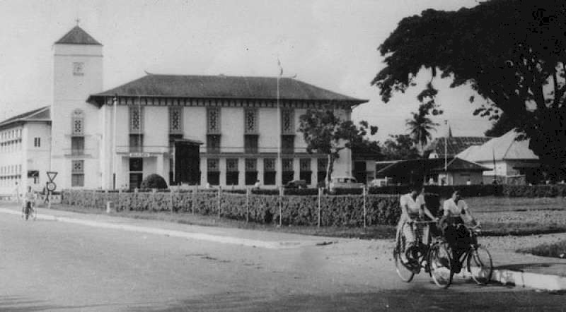
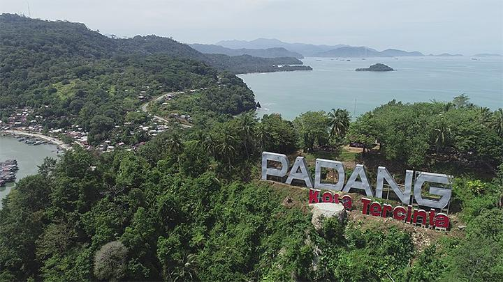

Profile Kota
Kota Padang adalah kota terbesar di pantai barat Pulau Sumatera
sekaligus ibukota dari Provinsi Sumatera Barat. Kota ini merupakan
pintu gerbang barat Indonesia dari Samudra Hindia.Padang merupakan
pusat pendidikan dan kesehatan di wilayah Sumatera bagian tengah,
ditopang dengan keberadaan sejumlah perguruan tinggi dan fasilitas
kesehatan. Sebagai kota seni dan budaya, Padang dikenal dengan
legenda Malin Kundang dan Sitti Nurbaya, dan setiap tahunnya
menyelenggarakan berbagai festival untuk menunjang sektor
kepariwisataan. Di kalangan masyarakat Indonesia, nama kota ini
umumnya diasosiasikan dengan etnis Minangkabau dan masakan khas
mereka yang umumnya dikenal sebagai masakan Padang.
Berdasarkan sistem perkotaan nasional, Kota Padang ditetapkan
sebagai Pusat Kegiatan Nasional (PKN). Dalam RPJMN 2015-2019, Kota
Padang diarahkan sebagai pusat permukiman baru yang layak huni dan
didukung oleh fasilitas ekonomi dan sosial budaya yang lengkap guna
mencegah terjadinya permukiman tidak terkendali (urban sprawl)
akibat urbanisasi di kota otonom terdekatnya.
Sejarah

Kota Padang merupakan salah satu kota tertua di pantai barat Lautan
Hindia. Hari jadi Kota Padang telah ditetapkan oleh Pemerintah pada
tanggal 7 Agustus 1669. Penetapan ini sesuai dengan Momen penyerbuan
yang heroik oleh para pejuang ke Loji Belanda di Muara Padang ketika
itu hingga loji tersebut hangus terbakar.
Sesuai sejarah pada awal nya (sebelum abad ke-17) Kota Padang dihuni
oleh para nelayan, petani garam, dan pedagang. Ketika itu Padang
belum begitu penting karena arus perdagangan orang Minangkabau lebih
mengarah ke pantai timur, melalui sungai-sungai besar yang
berpangkal dari Gunung Merapi, tempat pemukiman mereka. Namun sejak
Selat Malaka tidak lagi aman dari persaingan dagang yang keras oleh
bangsa asing seperti Portugis, Spanyol, Inggris, Belanda, Malaka,
Kerajaan Aceh, serta banyaknya peperangan dan pembajakan, maka arus
perdagangan berpindah ke pantai barat Pulau Sumatera.
Pada saat itu, Belanda datang mengincar Padang karena mempunyai
Muara yang bagus dan cukup besar serta udara yang nyaman. Pada tahun
1660 Belanda berhasil secara halus memaksakan kehendaknya lewat
perjanjian dengan raja-raja muda tersebut untuk mengusir Aceh dari
Muara Padang yang mulai lemah sejak kematian Sultan Iskandar Muda.
Belanda bahkan diizinkan membuat kantor dagangnya di Padang. Mata
uang Belanda digunakan pula sebagai alat tukar yang sah. Dilain
pihak, orang Aceh yang mulai terdesak menyingkir ke pedalaman. Pada
tahun 1667 Belanda membuat loji yang berfungsi sebagai gudang
sekaligus tangsi, kemudian daerah sekitarnya dikuasai pula demi
alasan keamanan. Daerah pinggir utara Batang Arau kian lama kian
ramai oleh kantor, gudang, dan pemukiman. Selanjutnya Belanda
membuat daerah pemisah antara pemukiman mereka dengan rakyat.
Belanda menempati Muara bertetangga dengan suku China, kemudian
Keling, baru terakhir penduduk asli.
Dalam rentetan sejarah selanjutnya walaupun tidak mudah, Belanda
berhasil menguasai daerah ini melalui politik devide et impera–nya
(adu domba) terhadap raja raja muda tersebut. Akhirnya pada tanggal
20 Mei 1784 Belanda menetapkan Padang sebagai pusat kedudukan dan
perdagangannya di Sumatera Barat. Kemudian Kota Padang semakin ramai
saja setelah adanya Pelabuhan Teluk Bayur, fabrik Semen ( Padang),
Tambang Batu Bara ( Sawahlunto), dan dibangunnya jaringan kereta
api. Berbeda dengan Belanda yang meninggalkan bekas penjajahan dalam
bentuk bangunan kolonial, kehadiran Aceh di Kota Padang justru
melahirkan budaya Urang Padang yang agak khas di tengah Masyarakat
Minangkabau lainnya. Bentuk rumah adat tradisi Padang lebih mirip
dengan rumah tradisional Aceh sehingga disebut dengan nama Rumah
Gadang Serambi Aceh. Pengaruhnya lainnya terlihat pula pada atribut
pakaian pengantin, gelar adat seperti Marah, Sutan yang nyaris tidak
dikenal di pedalaman Minangkabau. Namun akibat urbanisasi orang
Minangkabau dari segala pelosok ke Kota Padang, nuansa ke
Minangkabauannya tetap dapat dirasakannya meskipun bentuknya lebih
modern.
Geografis

Kota Padang memiliki batasan wilayah yaitu sebelah utara berbatasan
dengan Kabupaten Padang Pariaman, selatan berbatasan dengan
Kabupaten Pesisir Selatan, barat berbatasan dengan Selat Mentawai,
timur berbatasan dengan Kabupaten Solok. Dari keseluruhan luas Kota
Padang sebagian besar atau 51,01 persen berupa hutan yang dilindungi
oleh pemerintah. Luas bangunan dan pekarangan tercatat 51,08 km2
atau 7,35 persen. Selain daratan Pulau Sumatera, Kota Padang
memiliki 19 pulau di mana yang terbesar adalah Pulau Bintangur
seluas 56,78 ha, kemudian Pulau Sikuai di Kecamatan Bungus Teluk
Kabung seluas 48,12 ha dan Pulau Toran di Kecamatan Padang Selatan
seluas 33,67 ha.
Geografis wilayah Kota Padang yaitu 51,01% berupa hutan lindung,
7,35% terdiri dari bangunan dan perkarangan, dan sisanya adalah
lahan pertanian serta pemukiman. Kota Padang juga memiliki 19 pulau
besar dan kecil. Ketinggian wilayah Kota Padang cukup bervariasai
antara 0 hingga 1853 m dpl. Dilalui oleh 5 sungai besar dan 16
sungai kecil. Kondisi ini cukup didukung oleh curah hujan rata-rata
296,00 mm/bulan (2015) serta suhu yang rendah setiap tahunnya.
Kelembaban suhu di Kota Padang berkisar antara 81 hingga 88%.
Ekonomi
Kota Padang sebagai kota pelabuhan sejak abad ke-19 telah mengalami
pertumbuhan ekonomi cepat yang didorong oleh tingginya permintaan
kopi dari Amerika. Akibatnya pada tahun 1864 telah berdiri salah
satu cabang Javaansche Bank yakni bank yang bertanggung jawab
terhadap mata uang di Hindia Belanda serta telah mengikuti standar
selaras dengan yang ada di negara Belanda. Seiring itu pada 1879
juga telah muncul bank simpan pinjam. Hal ini mencerminkan tingginya
tingkat peredaran uang di kota ini. Kota ini menempatkan sektor
industri, perdagangan dan jasa menjadi andalan dibandingkan dengan
sektor pertanian dalam mendorong perekonomian masyarakatnya. Hal ini
terjadi karena transformasi ekonomi kota cenderung mengubah lahan
pertanian menjadi kawasan industri. Walaupun di sisi lain industri
pengolahan di kota ini telah memberikan kesempatan lapangan
pekerjaan yang cukup berarti.
Pusat perdagangan di Kota Padang adalah Pasar Raya Padang yang
dibangun pada zaman kolonial Belanda oleh seorang kapiten Cina
bernama Lie Saay. Dalam perkembangannya, pasar tradisional ini
pernah menjadi sentra perdagangan bagi masyarakat di Sumatera Barat,
Riau, Jambi dan Bengkulu pada era 1980-an. Selain itu, aktivitas
perniagaan di Padang juga didukung oleh 16 pasar satelit yang
tersebar di seluruh pelosok kota, sembilan di antaranya dimiliki
oleh Pemerintah Kota Padang yaitu Pasar Alai, Pasar Bandar Buat,
Pasar Belimbing, Pasar Bungus, Pasar Lubuk Buaya, Pasar Simpang
Haru, Pasar Siteba, Pasar Tanah Kongsi, dan Pasar Ulak Karang.
Perekonomian Kota Padang juga ditopang oleh sektor pariwisata dan
industri MICE (Meeting, Incentive, Convention, and Exhibition atau
Pertemuan, Insentif, Konvensi, dan Pameran). Hal ini didukung oleh
keberadaan sederet hotel dan gedung pertemuan di kota ini. Hingga
saat ini Kota Padang telah memiliki puluhan hotel berbintang,
termasuk di antaranya satu hotel bintang 5 dan delapan hotel bintang
4. Minangkabau International Convention Center (MICC) yang saat ini
dalam tahap konstruksi akan menjadi gedung pertemuan terbesar di
Kota Padang.
Wisata
Pantai Air Manis
Pantai Air Manis (bahasa Minangkabau: Pantai Aia Manih) adalah
pantai yang terletak kurang lebih 10 km ke selatan dari pusat Kota
Padang. Lokasinya Berada di belakang Gunung Padang atau tepatnya
di Kecamatan Padang Selatan, Kota Padang. Pantai ini merupakan
salah satu tujuan wisata populer yang selalu ramai dikunjungi oleh
masyarakat. Pantai ini dikenal dengan ombaknya yang kecil,
memiliki panorama yang indah di sisi utaranya dan legenda Malin
Kundang
Pantai Air Manis juga pantai di kota Padang yang masih rimbun oleh
pohon kelapa. Sehingga, terlihat indah dan menciptakan area
bersantai yang teduh selain pondok-pondok istirahat yang
disediakan warga sekitar.
Selain itu, Pantai Air Manis terkenal dengan legenda Malin
Kundangnya. Legenda yang mengisahkan seorang anak durhaka yang
berubah jadi batu akibat kutukan ibu kandungnya. Gundukan batu
disisi selatan pantai, yang disalah satu bagiannya berbentuk
manusia sedang sujud konon adalah sosok si anak durhaka yang
bernama Malin Kundang yang membatu beserta istri dan kru kapal
serta kapalnya.
Air Terjun Sarasah
Air Terjun Sarasah Batimpo terletak di Desa Laing, Tanjung
Harapan, kurang lebih 5 km dari pusat Kota Solok. Air terjun ini
berada di lokasi yang cukup strategis dengan pemandangan yang
indah menjadikan daya tarik. Air terjun ini juga merupakan tempat
yang tepat bagi Anda yang ingin menikmati pesona air terjun sambil
menikmati ekowisata seperti kolam pembibitan ikan, tempat
trekking/hiking, dan berkemah.
Air terjun unik berupa bebatuan bertumpuk-tumpuk seperti piramida
dengan nama Air Terjun Sarasah terdapat di Padang, Sumatera Barat.
Undakan tersebut terjadi secara alami. Tingginya adalah sekitar 40
meter. Wisatawan bisa menaiki setiap undakan air terjun karena
sisi kanan dan kirinya bisa ditapaki. Air Terjun Sarasah terletak
di Desa Koto Baru, Kelurahan Limau Manis Selatan, Kecamatan Pauh.
Meseum Adityawarman
Museum Adityawarman adalah museum budaya Sumatra Barat yang
terletak di Kota Padang.Museum ini diresmikan pada 16 Maret 1977
mengambil nama besar salah seorang raja Malayapura pada abad
ke-14, Adityawarman yang sezaman dengan Kerajaan Majapahit. Museum
ini memiliki julukan Taman Mini ala Sumatra Barat. Sebagai museum
budaya, Museum Adityawarman menyimpan dan melestarikan benda-benda
bersejarah, seperti cagar budaya Minangkabau dan sekitarnya
beserta beberapa cagar budaya nasional. Salah satu di antaranya
adalah bangunan yang berarsitektur Minang, bernama Rumah Bagonjong
atau Baanjuang
Jika ingin mengenal sejarah budaya minang lebih dalam, kamu bisa
berkunjung ke Museum Adityawarman yang berlokasi di Jalan
Diponegoro nomor 10. Di sana, berbagai macam koleksi menarik bisa
ditemukan. Mulai dari kain tradisional, hingga kamar-kamar yang
biasa terdapat di rumah gadang.